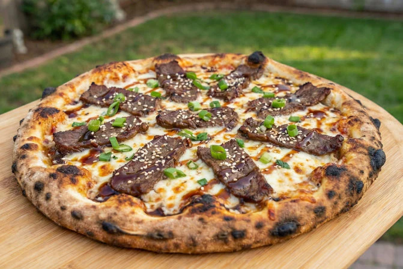

THE Beef Bulgogi Pizza
Home

Pizza is a beloved dish that originated in Italy and has become a global favorite. It consists of a round,
flat base of dough topped with various ingredients such as tomato sauce, cheese, meats, vegetables, and herbs.
The pizza is then baked in an oven until the crust is crispy and the cheese is melted and bubbly.
Ingredients
- Pizza dough
- Mozzarella cheese
- Bulgogi-marinated beef
- Pizza sauce
- Green onions
- Sesame seeds
Steps
- Marinate the beef in bulgogi sauce for at least 30 minutes.
- Cook the beef in a pan until browned and fully cooked.
- Prepare the pizza dough on a baking tray or pizza stone.
- Spread sauce evenly across the dough.
- Add mozzarella cheese and cooked bulgogi beef.
- Bake the pizza in the oven until the crust is golden and the cheese is melted.
- Remove from oven, slice, and serve hot.